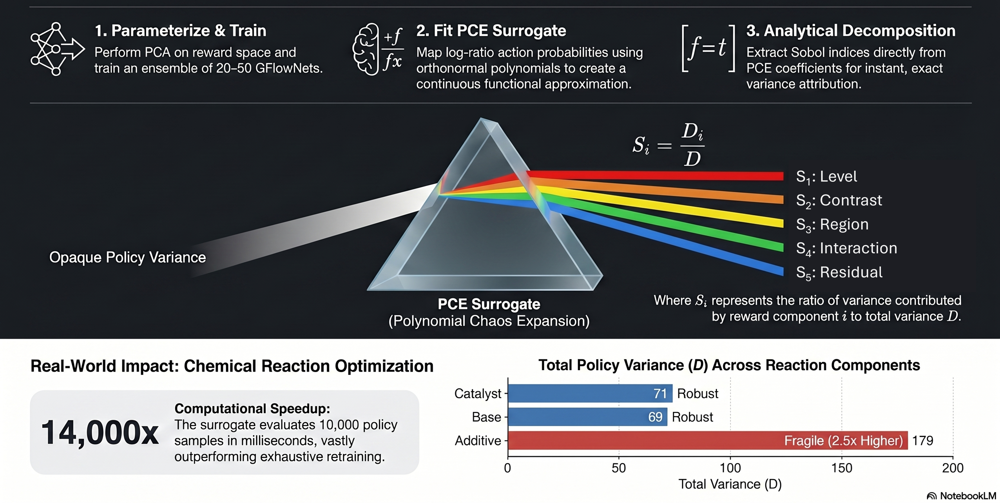
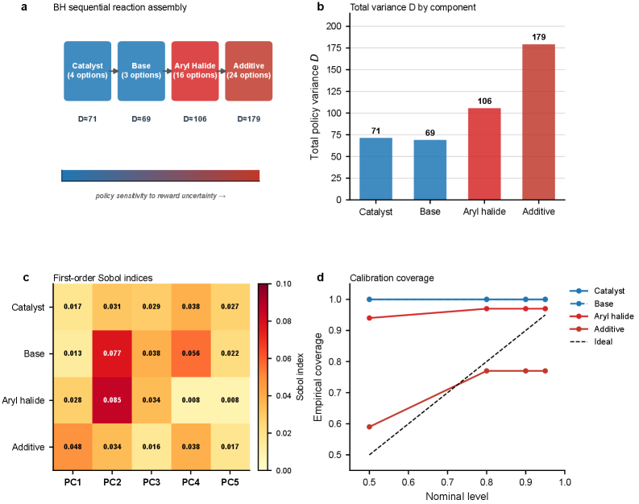

Convergence guarantees for the polynomial-chaos surrogate are formally verified in the Lean 4 proof assistant (four of five theorems).
Abstract
Sequential generative models conditioned on uncertain rewards are central to AI-driven scientific discovery, yet the epistemic uncertainty they inherit from imperfect reward estimates remains unquantified. We propagate this uncertainty through generative flow networks (GFlowNets) by fitting polynomial chaos expansions (PCEs) to small ensembles of trained models. The PCE coefficients yield analytical Sobol sensitivity indices, providing the first interpretable decomposition of which reward components drive which generative decisions, a capability unavailable from deep ensembles, Bayesian neural networks, or Monte Carlo dropout. Convergence guarantees are established theoretically and four of five are formally verified in the Lean 4 proof assistant. Across three real-world tasks the framework reveals actionable structure invisible to ensembles alone. On the Doyle-Dreher Buchwald-Hartwig dataset catalyst selection is robust ($D_{\mathrm{catalyst}}\approx 71$) while additive selection is fragile ($D_{\mathrm{additive}}\approx 179$, $2.5\times$ higher). In fragment-based molecular design the linker position is the most sensitive ($D_{\mathrm{linker}}\approx 28$) while decoration positions are the most robust ($D\approx 14$-$18$), reversing the conventional scaffold-robust / decoration-fragile assumption. On the Sachs protein signalling network, MAPK-cascade edges and PKA/PKC hub edges separate into distinct sensitivity regimes, providing a targeted map for perturbation experiments. Calibration coverage at the 95% level reaches 0.97-1.00 across the dominant steps, and the surrogate evaluates 10{,}000 policy samples in milliseconds - $10^{3}$-$10^{4}\times$ faster than exhaustive retraining.
Problem
Sequential generative models (GFlowNets) conditioned on uncertain rewards inherit epistemic uncertainty from imperfect reward estimates, but existing methods (deep ensembles, BNNs, MC dropout) cannot decompose which reward components drive which generative decisions.
Approach
Polynomial chaos expansions (PCEs) are fitted to small ensembles of trained GFlowNets. The PCE coefficients yield analytical Sobol sensitivity indices, providing an interpretable decomposition of policy variance by reward component. Convergence guarantees are established theoretically, with four of five formally verified in Lean 4 using Mathlib.

Figure 1: The uncertainty prism: decoding generative decision-making. The PCE surrogate acts as an interpretable prism that decomposes opaque policy variance into analytical Sobol sensitivity indices S_{i}=D_{i}/D , attributing uncertainty to individual reward principal components. Each outgoing ray is labelled by the canonical role of its principal component: S_{1} level (global offset of the rew
Results
On the Buchwald-Hartwig dataset, catalyst selection is robust (D_catalyst ~ 71) while additive selection is fragile (D_additive ~ 179, 2.5x higher). In fragment-based molecular design, the linker position is most sensitive (D ~ 28) while decorations are most robust (D ~ 14-18), reversing the conventional assumption. On the Sachs signalling network, MAPK-cascade and PKA/PKC hub edges separate into distinct sensitivity regimes.

Figure 2: Reaction condition optimisation for Buchwald–Hartwig cross-coupling. a, GFlowNet sequential construction of reaction conditions (catalyst, base, aryl halide, additive), with per-step total policy variance D indicating sensitivity to reward uncertainty. b, Total policy variance D by reaction component: additive selection is the most fragile step ( D\approx 179 ), while catalyst selection